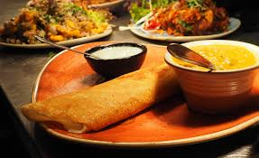

| 1 |
Tea
|
Standard Tea (150 ml) in disposable cups of
170 ml capacity

|
₹ 5 |
₹ 5 |
|
|
Tea (with Tea Bag) (150 ml) in disposable
cups of 170 ml capacity

|
₹ 10 |
₹ 10 |
| 2 |
Coffee |
Coffee (Using instant coffee powder (150 ml)
in disposable cups of 170 ml capacity.

|
₹ 10 |
₹ 10 |
| 3 |
Rail Neer/Packaged Drinking Water (Chilled) |
1 litre Bottle/1000 ml

|
₹ 15 |
₹ 15 |
|
|
500 ml Bottle
.jpg)
|
₹ 10 |
₹ 10 |
| 4 |
Janta Meal |
Economy Meal or Janta Khana (7 Pooris -175
gms, Dry Aloo Curry - 150 gms, with pickle

|
₹ 15 |
₹ 20 |
| 5 |
Standard Breakfast |
Vegetarian Breakfast (02 slices Bread + 01
Butter Chiplet + 02 Veg Cutlet +
01 Sauce Sachet/Idli and Vada/Upma and Vada/Pongal
and Vada)

|
₹ 35 |
₹ 40 |
|
|
Non - Vegetarian Breakfast (02 slices Bread + 01
Butter Chiplet + 02 Egg Omlette + 01 Sauce Sachet)

|
₹ 45 |
₹ 50 |
| 6 |
Standard Casserole Meals |
Vegetarian Lunch/Dinner - Rice (150 gms) +
02 Parathas or 04 Rotis (100gms) + Mix veg (100 gms) +
Pickle Sachet + Curd (80 gms) or Sweet (40 gms)
+ Packaged Water Glass (250 ml)

|
₹ 70 |
₹ 80 |
|
|
Non - Vegetarian Lunch/Dinner - Rice (150 gms
+ 02 Parathas 0r 04 Rotis (100 gms) + Dal (150 gms) +
02 Egg Curry (200 gms) + Pickle Sachet + Curd (80 gms)
or Sweet (40 gms) + Packaged Water Glass (250 ml)
.jpg)
|
₹ 80 |
₹ 90 |
|
|
Non - Vegetarian Lunch/Dinner - Rice (150 gms +
02 Parathas or 04 Rotis (100 gms) + Dal (150 gms) +
Chicken Curry (150 gms) + Pickle Sachet + Curd (80 gms)
or Sweet (40 gms) + Packaged Water (250 ml)
.jpeg)
|
₹ 120 |
₹ 120 |
| 7 |
Biryani |
Veg Biryani Lunch/Dinner - Biryani 270 gms including
70 gms vegetables + Pickle Sachet + Curd (80 gms) or
Sweet (40 gms) + Packaged Water Glass (250 ml)

|
₹ 70 |
₹ 80 |
|
|
Egg Biryani Lunch/Dinner - Biryani 270 gms including
02 Eggs + Pickle Sachet + Curd (80 gms) or Sweet (40 gms)
+ Packaged Water Glass (250 ml)

|
₹ 100 |
₹ 110 |
|
|
Non - Veg Biryani Lunch/Dinner - Biryani 170 gms Boneless
Chicken + Pickle Sachet + Curd (80 gms) or Sweet (40 gms)
+ Packaged Water Glass (250 ml)

|
₹ 100 |
₹ 110 |
| 8 |
Snack Meal |
Regional items/cuisine/flavour as a meal variety of
350 grams portion

|
₹ 50 |
₹ 50 |
| 9 |
Standard Thali Meals (Only in Ref. Rooms) |
Vegetarian Meals in Thalis

|
₹ 35 |
- |
|
|
Non - Vegetarian Meals in Thalis

|
₹ 40 |
- |